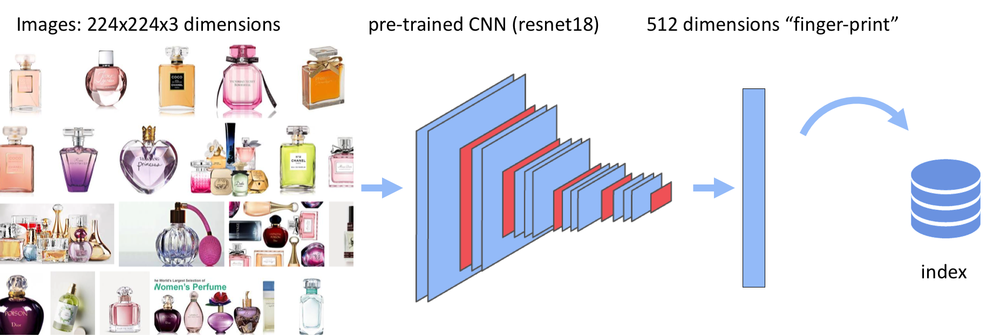
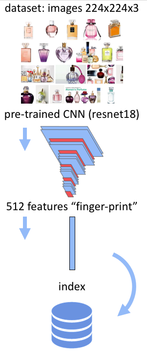
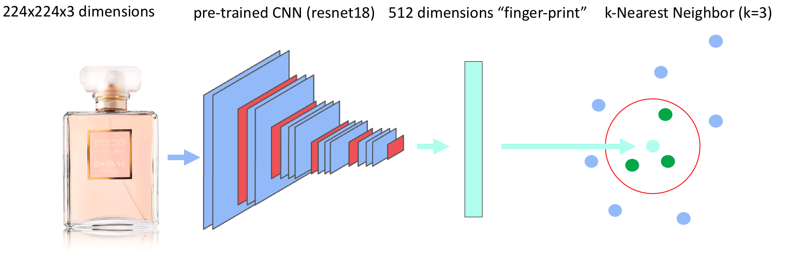
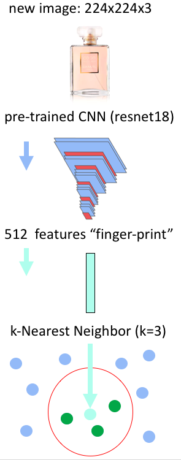

What is this?
This is a toy implementation of a visual search engine using
Apache MXNet Gluon and deployed on
AWS Fargate using
MXNet Model Server. Code available
here.
Try to
upload an image and it will search for products with similar visual features among roughly 1M items
from the 2013 Amazon catalog!
You can also pick a sample image:
How does it work?
- Each image from the database is encoded using a convolutional neural networks into 512 numbers. These numbers, or features, act as the digital fingerprint of the image.
- When we present a new image to the system, it is computing the digital fingerprint of this new image. Then it finds other images in the database that are the closest match with respect to these 512 features.




Here is a talk presenting this Visual Search tutorial
Resources
- Slides of the video.
- Dataset Image-based recommendations on styles and substitutes. J. McAuley, C. Targett, J. Shi, A. van den Hengel, SIGIR, 2015
- Visual Search Github code repository: try it yourself!
- HNSWlib Efficient library for fast approximate KNN search.
- HNSW paper: Efficient and robust approximate nearest neighbor search using Hierarchical Navigable Small World graphs. Yu. A. Malkov, D. A. Yashunin, 2016
- MXNet Gluon 60 minutes crash course: Get started with MXNet Gluon in this 60 minutes crash course
- Icons made by Icomoon and others from www.flaticon.com is licensed by CC 3.0 BY
Questions?
- Create an issue on the github repo
- Reach out on twitter, linkedin or github
 Built by Thomas Delteil
Built by Thomas Delteil